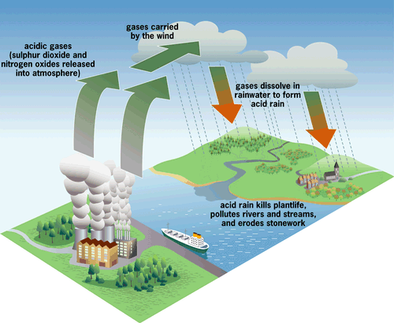
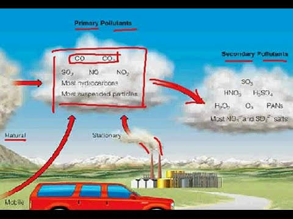
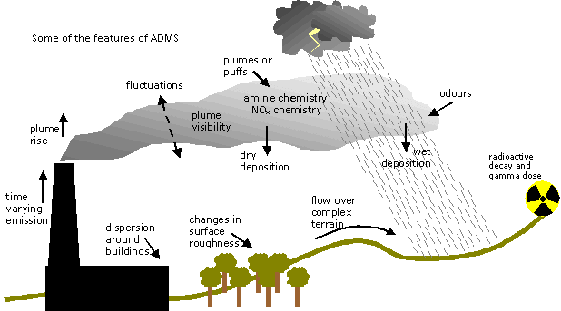
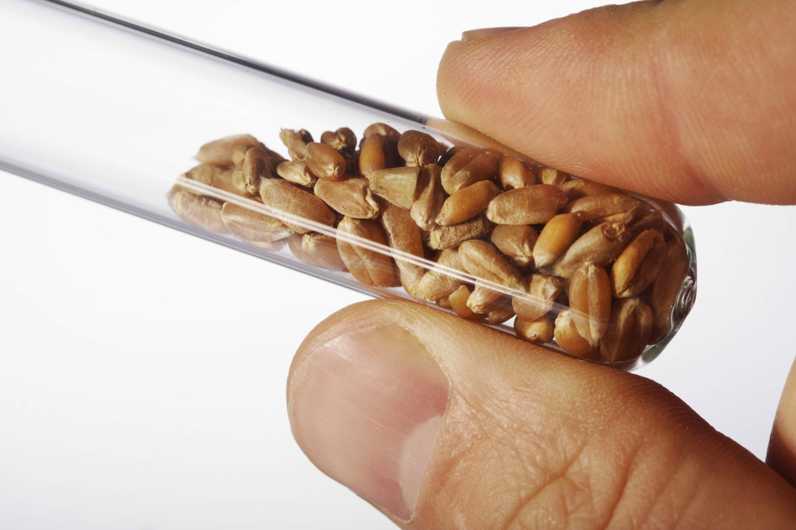

Fields of Study
Within these broad categories are countless fields of study, many of which have important effects on our daily life. Chemists improve many products, from the food we eat and the clothing we wear to the materials with which we build our homes. Chemistry helps to protect our environment and searches for new sources of energy.
Food Chemistry
.jpg)
.png)
Food science deals with the three biological components of food — carbohydrates, lipids and proteins. Carbohydrates are sugars and starches, the
chemical fuels needed for our cells to function. Lipids are fats and oils and are essential parts of cell membranes and to lubricate and cushion
organs within the body. Because fats have 2.25 times the energy per gram than either carbohydrates or proteins, many people try to limit their
intake to avoid becoming overweight. Proteins are complex molecules composed of from 100 to 500 or more amino acids that are chained together
and folded into three-dimensional shapes necessary for the structure and function of every cell. Our bodies can synthesize some of the amino
acids; however eight of them, the essential amino acids, must be taken in as part of our food. Food scientists are also concerned with the
inorganic components of food such as its water content, minerals, vitamins and enzymes.
.png) Food chemists improve the quality, safety, storage and taste of our food. Food chemists may work for private industry to develop new products
or improve processing. They may also work for government agencies such as the Food and Drug Administration to inspect food products and handlers
to protect us from contamination or harmful practices. Food chemists test products to supply information used for the nutrition labels or to
determine how packaging and storage affects the safety and quality of the food. Flavorists work with chemicals to change the taste of food.
Chemists may also work on other ways to improve sensory appeal, such as enhancing color, odor or texture.
Food chemists improve the quality, safety, storage and taste of our food. Food chemists may work for private industry to develop new products
or improve processing. They may also work for government agencies such as the Food and Drug Administration to inspect food products and handlers
to protect us from contamination or harmful practices. Food chemists test products to supply information used for the nutrition labels or to
determine how packaging and storage affects the safety and quality of the food. Flavorists work with chemicals to change the taste of food.
Chemists may also work on other ways to improve sensory appeal, such as enhancing color, odor or texture.
Environmental Chemistry


Environmental chemists study how chemicals interact with the natural environment. Environmental chemistry is an interdisciplinary study that involves both analytical chemistry and an understanding of environmental science. Environmental chemists must first understand the chemicals and chemical reactions present in natural processes in the soil water and air. Sampling and analysis can then determine if human activities have contaminated the environment or caused harmful reactions to affect it.

Water quality is an important area of environmental chemistry. “Pure” water does not exist in nature; it always has some minerals or other substance dissolved in it. Water quality chemists test rivers, lakes and ocean water for characteristics such as dissolved oxygen, salinity, turbidity, suspended sediments, and pH. Water destined for human consumption must be free of harmful contaminants and may be treated with additives like fluoride and chlorine to increase its safety.Agricultural Chemistry

Agricultural chemistry is concerned with the substances and chemical reactions that are involved with the production, protection and use of crops and livestock. It is a highly interdisciplinary field that relies on ties to many other sciences. Agricultural chemists may work with the Department of Agriculture, the Environmental Protection Agency, the Food and Drug Administration or for private industry. Agricultural chemists develop fertilizers, insecticides and herbicides necessary for large-scale crop production. They must also monitor how these products are used and their impacts on the environment. Nutritional supplements are developed to increase the productivity of meat and dairy herds.
Agricultural biotechnology is a fast-growing focus for many agricultural chemists. Genetically manipulating crops to be resistant to the herbicides used to control weeds in the fields requires detailed understanding of both the plants and the chemicals at the molecular level. Biochemists must understand genetics, chemistry and business needs to develop crops that are easier to transport or that have a longer shelf life.
| Page 1 | Page 2 |